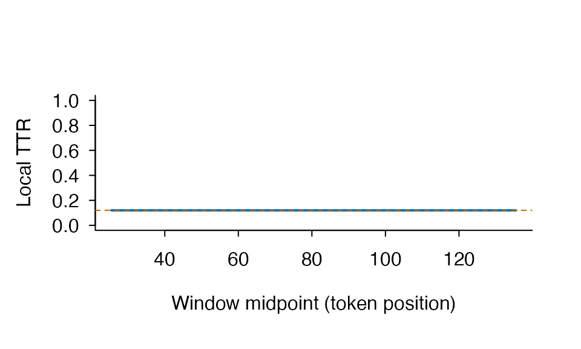
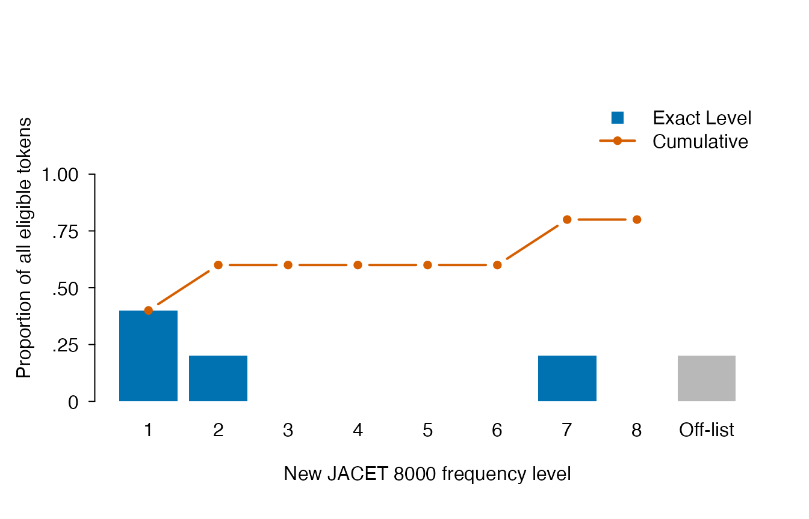

Preprocessing, parameter sensitivity, and frequency coverage
Source:vignettes/preprocessing-and-frequency.Rmd
preprocessing-and-frequency.RmdWhat ldfreq adds to the R ecosystem
R already has mature lexical-diversity implementations. In
particular, quanteda.textstats::textstat_lexdiv()
integrates with quanteda tokens and document-feature
matrices, while koRpus::lex.div() includes raw-character,
lemma, HD-D, MTLD, and MTLD-MA workflows. ldfreq does not
claim that these metrics were absent from R.
The narrower contribution of ldfreq is an auditable
measurement boundary:
| Question |
ldfreq representation |
|---|---|
| Which formula and boundary variant ran? |
method_id and metric contract |
| Which window, segment, or sample was requested? | requested and effective parameter list-columns |
| Was a short-text request computable? | structured status and missing_reason
|
| Did a screen change or censor a value? | no; screens are separate rows |
| Which raw-text decisions created the units? | preprocessing contract and token audit |
| Which resource produced a frequency value? | version, manifest hash, formula, and lookup identity |
| How much of the text matched that resource? | adjacent token/type coverage |
This makes ldfreq complementary to broad text-processing
ecosystems rather than a replacement for them.
Why preprocessing is a measurement decision
Caltabellotta, Van Steendam, Noreillie, and Peters (2026, https://doi.org/10.1016/j.asw.2026.101039) found that
lemmatization and the inclusion of all words versus content words
materially changed MATTR and frequency-based sophistication results.
Their empirical best-performing choice in one English/French study
should not be converted into a universal software default.
ldfreq therefore exposes the alternatives and their
coverage.
tokenization <- lexdiv_tokenize("Cats and cat ran run.")
annotated <- lexdiv_lemmatize(
tokenization,
lemmas = c("cat", "and", "cat", "run", "run"),
upos = c("NOUN", "CCONJ", "NOUN", "VERB", "VERB"),
backend_id = "vignette-fixture",
backend_version = "1",
upos_backend_id = "vignette-upos-fixture",
upos_backend_version = "1"
)
surface <- lexdiv_metrics_text(tokenization, metrics = "ttr")
lemma_all <- lexdiv_metrics_text(
annotated,
unit = "lemma",
metrics = "ttr"
)
lemma_content <- lexdiv_metrics_text(
annotated,
unit = "lemma",
word_inclusion = "content",
metrics = "ttr"
)
data.frame(
operationalization = c("surface/all", "lemma/all", "lemma/content"),
N = c(surface$results$N, lemma_all$results$N, lemma_content$results$N),
V = c(surface$results$V, lemma_all$results$V, lemma_content$results$V),
TTR = c(
surface$results$value,
lemma_all$results$value,
lemma_content$results$value
)
)
#> operationalization N V TTR
#> 1 surface/all 5 5 1.0
#> 2 lemma/all 5 3 0.6
#> 3 lemma/content 4 2 0.5The point is not that TTR is preferred. The example demonstrates that the lexical unit and denominator change the estimand before any diversity formula is selected.
Exact content-word overlap between two texts
The same annotation boundary supports type-set overlap. A second text
must be tokenized and annotated explicitly; ldfreq does not
guess its UPOS tags or lemmas.
comparison <- lexdiv_lemmatize(
lexdiv_tokenize("Cats and birds ran."),
lemmas = c("cat", "and", "bird", "run"),
upos = c("NOUN", "CCONJ", "NOUN", "VERB"),
backend_id = "vignette-fixture",
backend_version = "1",
upos_backend_id = "vignette-upos-fixture",
upos_backend_version = "1"
)
content_overlap <- lexdiv_content_overlap(
annotated,
comparison,
unit = "lemma",
details = "terms",
document_ids = c("essay", "reference")
)
content_overlap$summary[, c(
"measure_id", "value", "numerator", "denominator", "status"
)]
#> measure_id value numerator denominator status
#> 1 jaccard_types 0.6666667 2 3 ok
#> 2 dice_types 0.8000000 4 5 ok
#> 3 a_covered_by_b_types 1.0000000 2 2 ok
#> 4 b_covered_by_a_types 0.6666667 2 3 ok
#> 5 overlap_coefficient_types 1.0000000 2 2 ok
content_overlap$coverage
#> document_id input_tokens content_tokens eligible_tokens excluded_tokens
#> 1 essay 5 4 4 1
#> 2 reference 4 3 3 1
#> missing_upos_tokens non_content_upos_tokens missing_unit_tokens
#> 1 0 1 0
#> 2 0 1 0
#> identity_fallback_tokens eligible_types upos_coverage unit_coverage
#> 1 0 2 1 1
#> 2 0 3 1 1
#> content_unit_coverage selection_coverage
#> 1 1 0.80
#> 2 1 0.75
content_overlap$shared_terms
#> term token_count_a token_count_b
#> 1 cat 2 1
#> 2 run 2 1Because details = "terms" retains exact lexical strings,
the result provenance and print method disclose their presence. The
default comparability policy is fail-closed unless an analysis
explicitly selects mismatch = "warn" or
"allow". The comparison is unit-relevant: surface uses
tokenizer and UPOS settings; lemma also uses its annotation
method/backend; flemma instead uses the fixed flemma adapter/parser and
declared resource/override settings while ignoring lemma backend
identity because the flemma adapter consumes surface forms. UPOS labels
are always supplied separately from lemma labels. Strict flemma
comparison requires present, equal caller-declared resource versions.
Two inputs with no overrides are comparable on the override setting;
otherwise both need the same declared override version. The four-column
comparability table discloses label values and match status but does not
compare file bytes or content hashes.
All five rows use distinct exact types, but not the same denominator. Jaccard uses the union, Dice uses the sum of set sizes, the two coverage measures use A or B, and the overlap coefficient uses the smaller set. A strict subset can therefore have overlap coefficient 1 while Jaccard remains below 1. Missing UPOS, non-content UPOS, and missing selected units are counted separately, so the coverage table is part of the interpretation rather than an optional quality label.
Changing unit = "lemma" to "surface"
changes the estimand and may change the value. None of these exact
lexical-sharing measures detects plagiarism or directly measures
semantic similarity, coherence, proficiency, or writing quality.
Directional reference coverage across documents
When the research question is how much of several documents belongs
to one reference vocabulary, pairwise Jaccard or Dice values introduce
the wrong denominator. lexdiv_reference_coverage() instead
retains both the number of matched document items and the full document
denominator.
coverage_documents <- list(
essay_a = c("cat", "cat", "run", "rare"),
essay_b = c("bird", "run", "unknown")
)
reference_coverage <- lexdiv_reference_coverage(
coverage_documents,
reference = c("cat", "bird", "run"),
reference_id = "analysis_list",
details = "terms"
)
reference_coverage$summary[, c(
"document_id", "weighting", "value", "numerator", "denominator", "status"
)]
#> document_id weighting value numerator denominator status
#> 1 essay_a token 0.7500000 3 4 ok
#> 2 essay_a type 0.6666667 2 3 ok
#> 3 essay_b token 0.6666667 2 3 ok
#> 4 essay_b type 0.6666667 2 3 ok
reference_coverage$terms
#> document_id reference_id term document_token_count reference_token_count
#> 1 essay_a analysis_list cat 2 1
#> 2 essay_a analysis_list rare 1 0
#> 3 essay_a analysis_list run 1 1
#> 4 essay_b analysis_list bird 1 1
#> 5 essay_b analysis_list run 1 1
#> 6 essay_b analysis_list unknown 1 0
#> matched
#> 1 TRUE
#> 2 FALSE
#> 3 TRUE
#> 4 TRUE
#> 5 TRUE
#> 6 FALSEThe token row counts every repeated document occurrence; the type row counts each distinct document term once. Repeating an entry in the reference changes neither value. The function does not normalize or annotate terms, so comparable surface, lemma, or flemma vectors must be constructed explicitly upstream. Term detail is opt-in because it copies exact lexical strings into the result.
Flemma as a caller-supplied resource transformation
For NWLC-oriented sensitivity analysis,
lexdiv_flemmatize() reads a local AntBNC lemma-list file
supplied by the analyst. The payload is never bundled or downloaded.
Unknown forms use normalized-surface identity fallback so they remain
visible as off-list items, and explicit overrides take precedence over
the raw AntBNC mapping.
antbnc_fixture <- tempfile(fileext = ".txt")
writeLines(
c(
"cat\t->\tcat\tcats",
"run\t->\tran\trun",
"the\t->\tthe"
),
antbnc_fixture,
useBytes = TRUE
)
flemma_annotations <- lexdiv_flemmatize(
tokenization,
antbnc_fixture,
resource_version = "synthetic-vignette-fixture"
)
unlink(antbnc_fixture)
flemma_annotations$tokens[, c(
"surface", "flemma", "flemma_matched", "flemma_match_rule"
)]
#> surface flemma flemma_matched flemma_match_rule
#> 1 Cats cat TRUE antbnc
#> 2 and and FALSE identity
#> 3 cat cat TRUE antbnc
#> 4 ran run TRUE antbnc
#> 5 run run TRUE antbnc
lexdiv_metrics_text(flemma_annotations, unit = "flemma", metrics = "ttr")
#> <lexdiv_text_results> 5/5 eligible tokens | unit=flemma | inclusion=all
#> <lexdiv_results: 1 metric; contract 0.2.0>
#> metric_id value status missing_reason N V below_quality_floor
#> 1 ttr 0.6 ok <NA> 5 3 FALSEFor a real analysis, replace the synthetic fixture with a
legitimately obtained local AntBNC file and declare its version. The
adapter and parser identities are fixed by ldfreq;
resource_version and, when overrides are non-empty,
override_version are caller labels rather than inferred
content identities. They are disclosed in provenance and overlap
comparability output, so use path-free, non-sensitive labels and never
put secrets or private hashes in them. The local file name and content
hash are not retained in public provenance; a source-byte digest is used
only for caching and is never copied to public provenance or
results.
This is an explicit approximation boundary. NWLC reports using a
manually modified AntBNC mapping aligned to its selected word lists. Raw
AntBNC can map a surface form that is an independent New JACET headword
to a different family lemma. nj8_profile() records these
conflicts and lets an analysis retain AntBNC, prefer the word-list
headword, or stop for explicit review.
Resource-defined word families
For a step-by-step introduction, start with Word families, roots, and affixes. It connects counting units, coverage, part counts and occurrence-specific judgments. This section provides the detailed input contracts and alternatives.
Choose a family definition before counting. A lemma
usually links inflected forms; a derivational family may also include
words such as reusability. Flemma and word family are not
interchangeable. Bauer and Nation (1993, https://doi.org/10.1093/ijl/6.4.253) describe graded
inclusion criteria; an inventory’s inclusion level is not a frequency
band or evidence that a learner knows every member.
Experimental lexdiv_family_profile() accepts a plain
form–family table and complete lexdiv_import_annotations()
output. It needs no corpus download, Python, model or additional
dependency. This offline example contains authored
decisions, not verified entries from Nation’s lists:
family_env <- new.env(parent = baseenv())
sys.source(system.file("examples", "word-families.R", package = "ldfreq",
mustWork = TRUE), family_env)
family_example <- family_env$word_families_example
families <- family_example$profile
families$dictionary
#> record_id form family_id
#> 1 r01 use USE
#> 2 r02 uses USE
#> 3 r03 reusability USE
#> 4 r04 bank BANK_FINANCE
#> 5 r05 bank BANK_RIVER
families$documents[c("document_id", "selected_tokens", "matched_tokens",
"unresolved_tokens", "family_types", "family_ttr", "status")]
#> document_id selected_tokens matched_tokens unresolved_tokens family_types
#> 1 complete 4 4 0 1
#> 2 unresolved 2 0 2 NA
#> 3 empty 0 0 0 0
#> family_ttr status
#> 1 0.25 complete
#> 2 NA incomplete
#> 3 NA empty
family_example$comparison
#> unit metric_id value N V
#> 1 surface ttr 0.7500000 4 3
#> 2 surface mattr 1.0000000 4 3
#> 3 lemma ttr 0.5000000 4 2
#> 4 lemma mattr 0.6666667 4 2
#> 5 flemma ttr 0.5000000 4 2
#> 6 flemma mattr 0.6666667 4 2
#> 7 family ttr 0.2500000 4 1
#> 8 family mattr 0.3333333 4 1In use uses reusability use., excluding supplied
PUNCT leaves four tokens. They contain three surface types,
two authored lemmas/flemmas and one authored family: TTR is .75, .50 and
.25 respectively. Every comparison uses the same four ordered
occurrences. The window of three for MATTR is only a short arithmetic
illustration, not a recommended setting for research.
The bank quux. document is incomplete: bank
has two candidate families and quux is unlisted. Neither is
silently assigned a family, and complete family types/TTR are
NA. Inspect original context and both candidates:
families$occurrences[families$occurrences$status %in% c("ambiguous", "unlisted"),
c("document_id", "segment_id", "token_index", "pre", "keyword", "post", "status")]
#> document_id segment_id token_index pre keyword post status
#> 6 unresolved s1 1 bank quux. ambiguous
#> 7 unresolved s1 2 bank quux . unlisted
families$candidates[families$candidates$document_id == "unresolved", ]
#> document_id segment_id token_index record_id form family_id
#> 5 unresolved s1 1 r04 bank BANK_FINANCE
#> 6 unresolved s1 1 r05 bank BANK_RIVER
families$members
#> document_id family_id surface query n
#> 1 complete USE use use 2
#> 2 complete USE uses uses 1
#> 3 complete USE reusability reusability 1Use Nation’s bundled BNC/COCA inventory
bnccoca_data() returns Nation’s Level 6, Version
1.0.0 family lists under CC BY-SA 4.0,
including attribution and ShareAlike conditions. Its
dictionary contains 75,679 headword/member rows in 25,000
families; each of the 25 frequency/range bands contains 1,000 families.
The source is Nation’s
official resource page. The source spellings and memberships are
preserved, including uppercase keys.
sys.source(system.file("examples", "bnccoca-families.R", package = "ldfreq",
mustWork = TRUE), family_env)
nation <- family_env$bnccoca_example
nation$profile$documents[c("document_id", "selected_tokens", "matched_tokens",
"unresolved_tokens", "family_types", "family_ttr", "status")]
#> document_id selected_tokens matched_tokens unresolved_tokens family_types
#> 1 listed 4 4 0 2
#> 2 unlisted 2 1 1 NA
#> family_ttr status
#> 1 0.5 complete
#> 2 NA incomplete
nation$candidates[c("document_id", "headword", "frequency_band")]
#> document_id headword frequency_band
#> 1 listed USE 1
#> 2 listed USE 1
#> 3 listed COLOUR 1
#> 4 listed COLOUR 1
#> 5 unlisted USE 1The example explicitly uses
normalization = "nfkc_lower". Its first text,
use uses colour color, contains four tokens and two source
families. The second, use reusability, has an unlisted
form: REUSABILITY is absent from this snapshot, even
though the earlier authored example assigns it to USE. Complete family
types and TTR therefore remain NA. Inspect the original
KWIC, rather than inventing a family or interpreting noncoverage as an
error:
nation$profile$occurrences[nation$profile$occurrences$status == "unlisted",
c("document_id", "pre", "keyword", "post", "status")]
#> document_id pre keyword post status
#> 6 unlisted use reusability unlistedreference <- bnccoca_data() exposes
reference$dictionary and reference$resource
directly for
lexdiv_family_profile(annotations, reference$dictionary, reference$resource, normalization = "nfkc_lower").
The result retains the table, source IDs, citation and license. Save the
whole reference as well to retain conversion metadata and
supplementary lists. The installed example joins frequency bands by
record ID; matching a candidate is not a corpus
frequency estimate or a learner knowledge score.
Inclusion Level 6 and frequency band 6 are different variables. The Level 3 partial lists are a separate resource, not obtainable by filtering these frequency bands. The first bands also reflect pedagogical decisions. Each member does not have a separate Bauer–Nation affix-level annotation.
reference$supplementary keeps proper names, marginal
words, transparent compounds and acronyms separate, with NA
frequency bands. Membership in a proper-name list does not label the use
of that string in context. Placeholder slots 26–30 and Range software
are excluded. Any explicit combination with the core dictionary needs
its own declared scope and candidate checks. See
?bnccoca_data and the installed
licenses/bnccoca/NOTICE.md.
Compare counting units without hiding unlisted words
Family membership and dictionary coverage answer different questions. A smaller type count can reflect grouping words into families, or dropping words that the inventory does not list. Compare units on the same occurrence IDs, while reporting coverage of the original selection separately.
The following explicitly sourced recipe uses the authored lemmas in
the example above. It runs no analyzer and adds no exported API. Surface
and lemma types use the supplied strings verbatim; case/spelling
decisions should be made explicitly upstream. Family lookup retains its
declared nfkc_lower normalization.
sys.source(system.file("examples", "family-count-comparison.R", package = "ldfreq",
mustWork = TRUE), family_env)
counts <- family_env$compare_family_counts(nation$profile)
counts$documents[c("document_id", "selected_tokens", "matched_tokens",
"unlisted_tokens", "ambiguous_tokens", "missing_lemma_tokens",
"common_tokens", "token_coverage")]
#> document_id selected_tokens matched_tokens unlisted_tokens ambiguous_tokens
#> 1 listed 4 4 0 0
#> 2 unlisted 2 1 1 0
#> missing_lemma_tokens common_tokens token_coverage
#> 1 0 4 1.0
#> 2 0 1 0.5
counts$comparison[c("document_id", "scope", "unit", "N", "V", "ttr", "status")]
#> document_id scope unit N V ttr status
#> 1 listed all_selected surface 4 4 1.00 complete
#> 2 listed all_selected lemma 4 3 0.75 complete
#> 3 listed all_selected family 4 2 0.50 complete
#> 4 listed common_resolved surface 4 4 1.00 complete
#> 5 listed common_resolved lemma 4 3 0.75 complete
#> 6 listed common_resolved family 4 2 0.50 complete
#> 7 unlisted all_selected surface 2 2 1.00 complete
#> 8 unlisted all_selected lemma 2 2 1.00 complete
#> 9 unlisted all_selected family 2 NA NA incomplete
#> 10 unlisted common_resolved surface 1 1 1.00 complete
#> 11 unlisted common_resolved lemma 1 1 1.00 complete
#> 12 unlisted common_resolved family 1 1 1.00 completeFor use uses colour color, all four occurrences are
covered: surface, lemma, and family types are 4, 3, and 2.
colour and color remain distinct supplied
lemmas but share a source family. For use reusability, the
full selection has two tokens and an unavailable family total/TTR. The
common_resolved comparison contains only use:
N = 1 and TTR = 1 for each unit. That conditional value is not
the family TTR of the original two-token text.
all_selected keeps each unit’s unavailable totals as
NA when its assignments are incomplete.
common_resolved is the intersection of selected occurrences
with a known lemma and an assigned family. observed_types
counts known values without claiming a complete total. Empty selections
have zero types and undefined TTR. The recipe also accepts an explicit
selected logical vector in profile row order, limited to
the profile’s known-selected rows; its returned selection
keeps document/segment/token IDs. Do not reuse a vector after reordering
rows.
Keep unresolved occurrences available for inspection:
o <- counts$profile$occurrences
o[counts$selection$selected & o$status != "matched",
c("document_id", "token_index", "pre", "keyword", "post", "status")]
#> document_id token_index pre keyword post status
#> 6 unlisted 2 use reusability unlistedUse this subset for type counts and TTR only. Removing unresolved occurrences does not justify closing gaps for moving-window measures or n-grams. A string match is not an accuracy score, and supplementary-list membership does not establish a proper noun in context. Save the full result and the reference:
saveRDS(list(counts = counts, reference = nation$reference,
session = sessionInfo()), "family-comparison.rds")
saved <- readRDS("family-comparison.rds")
recounted <- family_env$compare_family_counts(saved$counts$profile,
selected = saved$counts$selection$selected)
stopifnot(identical(recounted, saved$counts))This workflow was also checked locally using 140 original essays from ICNALE GRA V2.1, retaining 31,902 saved lexical tokens and their lemmas. Document counts and assignments agreed with a separate direct dictionary lookup; 30,892 tokens matched the core inventory. This is an implementation check on a fixed input, not independent validation of contextual family assignments. ICNALE texts and individual records are not included in the package; the example above uses authored text. Dataset source: Ishikawa, S. (2024), The ICNALE Global Rating Archives (V2.1), Kobe University.
Supply a different inventory
For a different inventory, prepare character columns
record_id, form, family_id and
optionally upos. Repeated forms are allowed; assign only
when all matching records agree on one family. Optional POS matching
requires exact UD tags. If your inventory contains inclusion levels or
alternative definitions, select the intended rows explicitly
before lookup and record that rule in
family_definition. Preserve extra level/band columns for
inspection.
dictionary <- read.csv("my-family-table.csv", colClasses = "character",
fileEncoding = "UTF-8")
resource <- list(resource_id = "my-family-table", resource_version = "1",
language = "en", source_reference = "Full inventory citation",
data_license = "Terms applying to this locally obtained table",
family_definition = "Exact inclusion criteria and filtering used",
lookup_unit = "surface")
families <- lexdiv_family_profile(annotations, dictionary, resource,
unit = "surface", normalization = "identity", exclude_pos = c("PUNCT", "SYM"))
saveRDS(families, "family-profile.rds")
restored <- readRDS("family-profile.rds")
replayed <- lexdiv_family_profile(restored$annotations, restored$dictionary,
restored$provenance$resource, unit = restored$provenance$unit,
normalization = restored$provenance$normalization,
exclude_pos = restored$provenance$exclude_pos,
context_chars = restored$provenance$context_chars, review = restored$review)
stopifnot(identical(restored, replayed))Use normalization = "nfkc_lower" only when NFKC,
trimming and English lowercasing fit the inventory.
unit = "lemma" or "flemma" uses an already
supplied annotation column; it does not run an analyzer. Family IDs
remain unchanged. Missing POS makes selection unknown when exclusions
are requested; conditional_token_coverage then describes
known-selected tokens only, while whole-selection coverage is
unavailable. Read coverage beside the unresolved counts, not as an
annotation-accuracy estimate.
For other metrics, the installed example passes ordered family IDs
from a complete document to
lexdiv_metrics(). Never remove unresolved tokens and join
the survivors for MATTR. The pooled summary is also not an average of
document TTRs. Do not resolve a context-dependent form by changing the
global table for all its occurrences. Affix decomposition, inventory
licensing and empirical validation remain separate tasks.
Apply contextual judgments to individual occurrences
When a declared inventory distinguishes two families for the same
spelling, review_input prepares the existing
lexdiv_ambiguity_review() workflow. Use
review = to apply the resulting judgments to the family
profile. This optional review preparation uses quanteda; basic family
lookup and replay of saved judgments do not require loading quanteda or
running a language model.
if (requireNamespace("quanteda", quietly = TRUE)) {
sys.source(system.file("examples", "word-family-review.R", package = "ldfreq",
mustWork = TRUE), family_env)
contextual <- family_env$word_family_review_example
contextual$reviewed$occurrences[
contextual$reviewed$occurrences$surface == "bank",
c("segment_id", "pre", "keyword", "post", "lookup_status",
"status", "family_id", "review_record_id", "reviewer", "reason")]
contextual$reviewed$documents[c("document_id", "selected_tokens",
"review_selected_tokens", "unresolved_tokens", "family_types", "family_ttr")]
}
#> document_id selected_tokens review_selected_tokens unresolved_tokens
#> 1 example 8 2 0
#> 2 empty 0 0 0
#> family_types family_ttr
#> 1 7 0.875
#> 2 0 NAThe authored sentences are The bank lends money. and
The river bank floods. The two occurrences receive
different families under this illustrative definition.
Excluding punctuation still leaves eight tokens. Before review, two
occurrences are ambiguous and complete family TTR is unavailable. After
the two supplied judgments, seven families give TTR = 7/8. The original
dictionary and automatic lookup remain unchanged in the saved result.
These choices do not assert that every inventory separates the two
meanings, or that grouping by meaning and grouping by derivation are the
same operation.
For your own profile, use its prepared inputs without editing their candidate set or resource snapshot. Decisions identify record IDs, not family IDs:
stopifnot(length(families$review_input$targets) > 0)
review <- do.call(lexdiv_ambiguity_review,
c(list(x = families$annotations), families$review_input))
write.csv(review$occurrences, "family-decisions.csv", row.names = FALSE, na = "")
# Review the source/context and fill status, candidate_id, reviewer and reason.
# Use selected + a record ID, or unresolved + an empty candidate_id.
# Omit unreviewed rows from this decision file; source tokens remain retained.
decisions <- read.csv("family-decisions.csv", colClasses = "character",
na.strings = "", check.names = FALSE)
review <- do.call(lexdiv_ambiguity_review,
c(list(x = families$annotations), families$review_input, list(decisions = decisions)))
p <- families$provenance
reviewed <- lexdiv_family_profile(families$annotations, families$dictionary,
p$resource, unit = p$unit, normalization = p$normalization,
exclude_pos = p$exclude_pos, context_chars = p$context_chars, review = review)
saveRDS(reviewed, "reviewed-families.rds")Character CSV input preserves IDs such as 01 and literal
NA; empty fields are missing. A selected
judgment applies only to that source occurrence. An explicit
unresolved judgment also withholds a previously automatic
match; unreviewed occurrences keep their lookup result. Report
review_selected_tokens and
review_unresolved_tokens beside coverage, and inspect
lookup_status and lookup_family_id when
explaining what changed. Original contexts and the complete review,
including judgment reasons, remain in $review.
The generic review display lists candidate records by original
surface. If the same surface has different POS/lemma annotations across
occurrences, consult $candidates using
document/segment/token IDs to check eligibility. A selected record for
the wrong POS or lemma, or a decision on an excluded or
unknown-selection token, is rejected. Review cannot invent missing
inventory entries, fix annotations or silently reinclude excluded
tokens.
Changes to the source annotations, dictionary contents/order,
resource definition, selected unit, normalization or exclusions
invalidate the review snapshot. Recreate the review and reassess
judgments; do not copy old IDs into a new snapshot. Context-window
changes alone do not invalidate judgments. Independent reviewers can use
the same prepared input and compare their results with
lexdiv_compare_ambiguity() before applying an adjudicated
review. This preserves disagreement; it does not establish independent
judgment or linguistic correctness by itself.
Source-linked roots and affixes
The installed word-parts.R recipe counts
supplied analyses at original occurrences. It is an
explicitly sourced example helper, not an exported API or an automatic
morphology analyzer. It needs no Python, model, network or quanteda.
Family membership remains a separate input and is not inferred.
parts_env <- new.env(parent = baseenv())
sys.source(system.file("examples", "word-parts.R", package = "ldfreq",
mustWork = TRUE), parts_env)
sys.source(system.file("examples", "word-parts-demo.R", package = "ldfreq",
mustWork = TRUE), parts_env)
word_parts <- parts_env$word_parts_example$profile
word_parts$occurrences[c("surface", "status", "analysis_id",
"observed_root_occurrences", "observed_prefix_occurrences",
"observed_suffix_occurrences", "observed_inflection_occurrences",
"observed_derivation_occurrences")]
#> surface status analysis_id observed_root_occurrences
#> 1 teachers complete 01 1
#> 2 smaller complete 02 1
#> 3 reuse complete 03 1
#> 4 transmit complete 04 1
#> 5 transmission complete 05 1
#> 6 . excluded <NA> NA
#> 7 bank ambiguous <NA> NA
#> 8 went unanalysed w1 NA
#> 9 quux unlisted <NA> NA
#> 10 . excluded <NA> NA
#> observed_prefix_occurrences observed_suffix_occurrences
#> 1 0 2
#> 2 0 1
#> 3 1 0
#> 4 1 0
#> 5 1 1
#> 6 NA NA
#> 7 NA NA
#> 8 NA NA
#> 9 NA NA
#> 10 NA NA
#> observed_inflection_occurrences observed_derivation_occurrences
#> 1 1 1
#> 2 1 0
#> 3 0 1
#> 4 0 1
#> 5 0 2
#> 6 NA NA
#> 7 NA NA
#> 8 NA NA
#> 9 NA NA
#> 10 NA NA
word_parts$documents[c("document_id", "selected_tokens", "complete_coverage",
"observed_affix_occurrences", "affix_occurrences", "affixes_per_token", "status")]
#> document_id selected_tokens complete_coverage observed_affix_occurrences
#> 1 parts 5 1 7
#> 2 uncertain 3 0 0
#> 3 empty 0 NA 0
#> affix_occurrences affixes_per_token status
#> 1 7 1.4 complete
#> 2 NA NA incomplete
#> 3 0 NA emptyThese are authored teaching examples, not imported
MorphoLex or Nation entries. The first document contains five selected
tokens. teachers contributes one root, derivational
-er and inflectional -s; comparative
-er in smaller has a different ID. The five
tokens contain seven affix occurrences, so affixes per token is 7/5. The
proportion of tokens containing affixes is 1. These are different
denominators. The alternate authored analysis leaves
transmit undivided: inspect
parts_env$word_parts_example$alternative to see six affix
occurrences and five root types, compared with seven and four in the
first analysis. Neither choice establishes what a learner knows or
mentally decomposes.
The second document retains ambiguous bank, explicitly
unanalysed went, and unlisted quux; its
complete totals are unavailable, not zero. Empty documents retain zero
counts and undefined proportions. A partial analysis
contributes its known parts to observed_* counts but leaves
full totals unavailable. complete is always relative to the
declared analysis scope: a complete derivational
analysis can omit inflection by design.
Prepare two plain data frames with character identifiers:
| Table | Required columns | Meaning |
|---|---|---|
analyses |
analysis_id, form,
completeness
|
Unique analysis IDs; exact surface forms; complete,
partial or unanalysed. Optional
upos requires exact UD POS matching. Multiple eligible
analyses remain ambiguous. |
parts |
analysis_id, part_index,
part_id, canonical, role,
process, boundness
|
One row per part, including repeated parts. Roles:
root, prefix, suffix. Processes:
none for roots; inflection,
derivation, unknown for affixes. Boundness:
free, bound, unknown; affixes
must be bound. |
part_index is consecutive display order within
each analysis, not an attachment sequence or a derivation tree.
A complete analysis must contain a root and classify its affix
processes. Rootless or other unsupported analyses remain
partial/unanalysed. Multiple roots are permitted. Parts with a shared ID
must have consistent canonical form and classification. Homographic
affixes with different functions need different IDs when the source
distinguishes them. Additional metadata columns are retained; they are
not interpreted as trees, validated substring coordinates, or evidence
of semantic transparency.
The authored mit/miss example uses one root ID with a
retained realization column. This expresses an explicit
analytical choice, not a rule that unifies similar strings. A
base can already contain several parts before another
affix is attached; this recipe counts listed parts and does not
reconstruct those formation stages. Nonaffixal processes such as
conversion or irregular inflection are not diagnosed by a zero affix
count.
The required resource declarations are
resource_id, resource_version,
language, source_reference,
data_license, analysis_scope, and
analysis_basis.
word_parts_profile(annotations, analyses, parts, resource, exclude_pos = character(), context_chars = 30L, max_rows = 1e6)
accepts complete lexdiv_import_annotations() output.
Matching is exact and case-sensitive; there is no lemma fallback or
silent normalization. Missing POS makes exclusion unknown, and
whole-selection coverage is then unavailable. Row ceilings apply to each
reference table, source tokens and candidate/part expansion, not total
memory. Keep inputs scoped to the analysis at hand.
# Full tables remain available beside aggregate results.
word_parts$part_occurrences
#> document_id segment_id token_index surface completeness analysis_id
#> 1 parts s 1 teachers complete 01
#> 2 parts s 1 teachers complete 01
#> 3 parts s 1 teachers complete 01
#> 4 parts s 2 smaller complete 02
#> 5 parts s 2 smaller complete 02
#> 6 parts s 3 reuse complete 03
#> 7 parts s 3 reuse complete 03
#> 8 parts s 4 transmit complete 04
#> 9 parts s 4 transmit complete 04
#> 10 parts s 5 transmission complete 05
#> 11 parts s 5 transmission complete 05
#> 12 parts s 5 transmission complete 05
#> part_index part_id canonical role process boundness realization
#> 1 1 TEACH teach root none free teach
#> 2 2 ER_AGENT er suffix derivation bound er
#> 3 3 S_PL s suffix inflection bound s
#> 4 1 SMALL small root none free small
#> 5 2 ER_COMP er suffix inflection bound er
#> 6 1 RE_AGAIN re prefix derivation bound re
#> 7 2 USE use root none free use
#> 8 1 TRANS trans prefix derivation bound trans
#> 9 2 MIT_MISS mit root none bound mit
#> 10 1 TRANS trans prefix derivation bound trans
#> 11 2 MIT_MISS mit root none bound miss
#> 12 3 ION ion suffix derivation bound ion
word_parts$frequency
#> document_id part_id canonical role process boundness
#> 1 parts TEACH teach root none free
#> 2 parts ER_AGENT er suffix derivation bound
#> 3 parts S_PL s suffix inflection bound
#> 4 parts SMALL small root none free
#> 5 parts ER_COMP er suffix inflection bound
#> 6 parts RE_AGAIN re prefix derivation bound
#> 7 parts USE use root none free
#> 8 parts TRANS trans prefix derivation bound
#> 9 parts MIT_MISS mit root none bound
#> 10 parts ION ion suffix derivation bound
#> observed_occurrences
#> 1 1
#> 2 1
#> 3 1
#> 4 1
#> 5 1
#> 6 1
#> 7 1
#> 8 2
#> 9 2
#> 10 1
word_parts$occurrences[word_parts$occurrences$status == "ambiguous",
c("document_id", "segment_id", "token_index", "pre", "keyword", "post")]
#> document_id segment_id token_index pre keyword post
#> 7 uncertain s 1 bank went quux.
word_parts$candidates
#> document_id segment_id token_index analysis_id form completeness
#> 1 parts s 1 01 teachers complete
#> 2 parts s 2 02 smaller complete
#> 3 parts s 3 03 reuse complete
#> 4 parts s 4 04 transmit complete
#> 5 parts s 5 05 transmission complete
#> 6 uncertain s 1 b1 bank complete
#> 7 uncertain s 1 b2 bank complete
#> 8 uncertain s 2 w1 went unanalysedfrequency reports observed part occurrences by document
and part ID; absent rows are not assertions of complete zero counts.
Read it with documents. Alternative candidates do not
contribute to frequency until an analysis is uniquely eligible. This
recipe supports inspection, but does not yet apply occurrence-specific
reviewer decisions or automatically choose a candidate.
saveRDS(word_parts, "word-parts.rds")
restored <- readRDS("word-parts.rds")
stopifnot(identical(do.call(parts_env$word_parts_profile, restored$inputs), restored))
# For caller-prepared CSV input, preserve IDs and distinguish literal NA from missing.
analyses <- read.csv("analyses.csv", colClasses = "character", na.strings = "",
fileEncoding = "UTF-8", check.names = FALSE)
parts <- read.csv("parts.csv", colClasses = "character", na.strings = "",
fileEncoding = "UTF-8", check.names = FALSE)
parts$part_index <- as.numeric(parts$part_index) # validated by the recipeDifferent resources answer different morphological questions
Nation’s lists group forms into educational families. MorphoLex
provides segmentation and morphological variables. MorphyNet separates
derivational source–target relations from inflectional lemma–form
relations. Its English derivational table records transmit
→ retransmit with prefix re, and
transmit → transmitter with suffix
er. A relation is not a complete word segmentation; graph
connectivity does not establish a Nation family. MorphyNet’s 15
languages do not include Japanese. It uses CC BY-SA 3.0. A nine-row
teaching excerpt is bundled; the full file is read from a separately
obtained local copy as shown below.
For Japanese, J-UniMorph is a CC BY
4.0 candidate for inflectional features, not an
English-style educational family inventory. Its filtered
jpn snapshot has 12,687 records for 107 lemmas. For
example, 食べられる has potential, passive and honorific
analyses; 開ける also permits distinct lemma analyses. Keep
the original features and multiple candidates. These forms can span
several UniDic short units, so matching them requires an explicit
source-span or whole-form unit. Joining by a single short-unit token
would change the question.
Neither resource is a contextual analyzer supplied by ldfreq. Japanese inflection, productive derivation, compound structure and homophony require different relations and evidence. UniDic lemmas or shared kanji alone do not define a derivational family; verb forms in J-UniMorph do not constitute a complete Japanese vocabulary or a frequency norm. See Matsuzaki et al. (2024), J-UniMorph, for its scope.
Inspect MorphyNet formation relations
morphynet_read_derivations() reads the official
six-column derivational TSV in R, preserving original words, POS,
affixes and line IDs. It needs no Python, model or extra package. For
the complete English v1 reference, obtain eng.derivational.v1.tsv
from the official repository, retain its CC BY-SA 3.0 terms, and read
it:
reference <- morphynet_read_derivations("eng.derivational.v1.tsv",
language = "en", resource_version = "English v1")
reference$resource$source_sha256
saveRDS(reference, "morphynet-reference.rds")The English file checked for this guide has 225,131 relations and
SHA-256
5920edacc1888b14464fc5cd96beea0a721221d56d1dc0e49de22f4c7c537c50.
Language/version are your declarations; the reader does not authenticate
every possible supplied file. It rejects invalid formats and retains a
hash of the actual input. POS symbols remain unchanged, including
U; the source row teach -> teacher has N/N
tags, not an automatically corrected V/N pair. Supplied relations can
include multiword fields, which are retained literally.
The installed example uses nine unchanged rows selected for six words, with a mapping to their original source lines. This small excerpt is not a reference for estimating vocabulary coverage. The contexts and reviewer decisions are authored illustrations:
morphynet_env <- new.env(parent = baseenv())
sys.source(system.file("examples", "morphynet-relations.R", package = "ldfreq",
mustWork = TRUE), morphynet_env)
morphynet <- morphynet_env$morphynet_example
morphynet$reference$relations[
morphynet$reference$relations$target_word == "reusability",
c("source_word", "target_word", "source_pos", "target_pos", "morpheme", "affix_position")]
#> source_word target_word source_pos target_pos morpheme affix_position
#> 4 reuse reusability N N ability suffix
#> 6 reusable reusability J N ity suffix
#> 7 usability reusability N N re prefixReusability has incoming relations from reuse with
ability, reusable with ity, and
usability with re. Do not count these
as three affixes in one occurrence. They are separate formation
relations that can coexist. Nor does their presence supply missing
membership in Nation’s inventory.
The example builds a candidate table by matching each exact
target_word to the requested surface, then uses the
existing review API when quanteda is available. Source/target words and
POS remain visible beside the relation ID. A study must declare what
selecting one relation means; context alone does not guarantee a unique
morphological derivation.
if (!is.null(morphynet$reviewed)) {
morphynet$reviewed$occurrences[c("segment_id", "pre", "keyword", "post",
"candidate_count", "status", "reason")]
morphynet$selected[c("segment_id", "surface", "source_word", "target_word",
"morpheme", "affix_position")]
}
#> segment_id surface source_word target_word morpheme affix_position
#> 1 s2 reusability reusable reusability ity suffixThere are five targeted occurrences. The two instances of
reusability retain all three relations; the illustration
selects reusable + ity for one and withholds selection for
the other. The single incoming relations of retransmit and
transmitter also remain unreviewed until explicitly chosen.
teachers has no candidate in this excerpt: that is not an
affix count of zero, a lack of inflection or evidence that a learner
made an error. The complete source token/segment roster, including the
empty document, is retained. Review summaries describe the declared
targets, not all corpus tokens.
saveRDS(morphynet, "morphynet-review.rds")
restored <- readRDS("morphynet-review.rds")
replayed <- lexdiv_ambiguity_review(restored$annotations, restored$targets,
restored$candidates, restored$resource,
decisions = restored$reviewed$decisions)
stopifnot(identical(replayed, restored$reviewed))Reading saved tables requires no quanteda; regenerating KWIC review
does. The review API currently matches whitespace-free single-token
surfaces. Do not delete spaces from multiword targets or silently
substitute lemmas to force a match. Case normalization, lemma-based
alignment, complete derivation trees and validated
morphological-productivity estimates are separate tasks. For adaptation
or redistribution, retain source attribution and applicable ShareAlike
terms; see licenses/morphynet/NOTICE.md.
Use the bundled MorphoLex reference
MorphoLex-en supplies canonical segmentation and root/affix variables
(Sánchez-Gutiérrez et al., 2018, https://doi.org/10.3758/s13428-017-0981-8). The package
includes all 34 worksheets (68,624 word records and the aggregate
prefix/suffix/root tables), plus the original data dictionary, from https://github.com/hugomailhot/MorphoLex-en.
These data use CC BY-NC-SA 4.0, not the MIT license of the R
code. Noncommercial sharing and adaptation require attribution
and the applicable ShareAlike conditions; commercial use is not granted
by that license. See the installed
licenses/morpholex/NOTICE.md.
morpholex <- morpholex_data(c("0-1-1", "All roots"))
word_rows <- morpholex$sheets[["0-1-1"]]
word_rows[word_rows$Word %in% c("teacher", "teachers"),
c("Word", "MorphoLexSegm", "ROOT1_FamSize", "ROOT1_Freq_HAL")]
#> Word MorphoLexSegm ROOT1_FamSize ROOT1_Freq_HAL
#> 6247 teacher {(teach)}>er> 4 84480
#> 6248 teachers {(teach)}>er> 4 84480
morpholex$provenance$data_license
#> [1] "CC BY-NC-SA 4.0"Tables retain character values, including identifiers and missing
cells. Convert a numeric measure explicitly when needed, for example
as.numeric(word_rows$ROOT1_FamSize).
morpholex_data() without arguments returns all sheets;
$provenance$sheet_catalog lists their names and dimensions.
Two source Word cells (ELP IDs 42162 and 65908) are logical
values and appear as TRUE and FALSE; an exact
lowercase query will not match them. The source values are preserved, so
any case normalization should be an explicit decision. No
readxl, Python, model, or internet connection is needed for
bundled data. The word-parts recipe can use the same snapshot:
sys.source(system.file("examples", "morpholex-word-parts.R", package = "ldfreq",
mustWork = TRUE), parts_env)
forms <- c("transmit", "transport", "transmission", "teacher", "teachers")
reference <- parts_env$read_morpholex_parts(
sheets = c("0-1-0", "0-1-1", "1-1-0"),
words = forms)
reference$analyses
#> analysis_id form completeness segmentation source_sheet
#> 1 41878 transmit complete {(transmit)} 0-1-0
#> 2 41881 transmission complete {(transmit)}>ion> 0-1-1
#> 3 43741 teacher complete {(teach)}>er> 0-1-1
#> 4 43742 teachers complete {(teach)}>er> 0-1-1
#> 5 41903 transport complete {<trans<(port)} 1-1-0
reference$unlisted_words # absent from the selected sheets, not necessarily the workbook
#> character(0)
source <- data.frame(document_id = "example", segment_id = "s",
text = paste(forms, collapse = " "))
tokens <- data.frame(document_id = "example", segment_id = "s",
token_index = seq_along(forms), surface = forms)
imported <- lexdiv_import_annotations(tokens, source,
list(language = "en", analyzer = "authored", analyzer_version = "1",
dictionary = "none", dictionary_version = "1", unit = "word", normalization = "none"))
profile <- parts_env$word_parts_profile(imported, reference$analyses,
reference$parts, reference$resource)
profile$documents[c("root_occurrences", "affix_occurrences", "complete_coverage")]
#> root_occurrences affix_occurrences complete_coverage
#> 1 5 4 1These five source entries give five root occurrences and four affix occurrences. Save the complete reference/profile pair to keep both inputs and results:
saveRDS(list(reference = reference, profile = profile), "morpholex-profile.rds")
# Optional: read an explicitly obtained workbook instead; requires readxl.
local_reference <- parts_env$read_morpholex_parts(path = "MorphoLEX_en.xlsx",
sheets = c("0-1-0", "0-1-1", "1-1-0"), words = forms)The reader retains all columns of selected source rows, selected
sheet names, requested/missing words and a workbook SHA-256. It extracts
recorded canonical parts and checks them against the reported PRS
signature and morpheme count. Unsupported syntax or inconsistent counts
remain unanalysed; the recipe never repairs an entry by
guessing. It does not validate linguistic accuracy or the derivation
tree, and preserves root boundness as unknown. Original POS and numeric
variables remain in source_rows; POS is not silently mapped
to UD.
In the inspected workbook, transmit is undivided,
transport is trans- + port, and
transmission uses canonical transmit + -ion.
Both teacher and teachers use
teach + -er. Thus, its complete counts describe
reported derivational segmentation, excluding
inflection. The whole-word TUBELEX frequency, MorphoLex’s
cumulative root frequency/family size, and observed root counts in a
target corpus remain separate variables with their own reference
populations. Do not infer missing inflections, root meanings, learner
knowledge, or productivity from these counts.
Connect families and morphology at the same occurrences
To explain a vocabulary profile, keep family membership, recorded
segmentation and incoming formation relations alongside the same
source occurrence. The explicitly sourced recipe below reuses
lexdiv_family_profile(), the word-parts recipe and
lexdiv_ambiguity_review(). It requires optional quanteda in
a UTF-8 R session. Text and decisions are authored; references are the
bundled Nation/MorphoLex snapshots and the nine-row MorphyNet teaching
excerpt.
source(system.file("examples", "morphology-link.R", package = "ldfreq"))
source(system.file("examples", "morphology-link-demo.R", package = "ldfreq"))
linked <- morphology_link_example$reviewed
linked$occurrences[, c("surface", "family_status", "morpholex_lookup_status",
"morpholex_review_status", "morphynet_candidate_count", "morphynet_review_status")]
#> surface family_status morpholex_lookup_status morpholex_review_status
#> 1 teacher unlisted complete selected
#> 2 teachers unlisted complete unresolved
#> 3 reusability unlisted unlisted no_candidates
#> 4 reusability unlisted unlisted no_candidates
#> 5 quux unlisted unlisted no_candidates
#> morphynet_candidate_count morphynet_review_status
#> 1 1 unreviewed
#> 2 0 no_candidates
#> 3 3 selected
#> 4 3 unresolved
#> 5 0 no_candidates
linked$documents[, c("document_id", "eligible_N", "morpholex_selected_complete_N",
"reviewed_suffix_instances", "full_suffix_instances", "selected_suffix_relations")]
#> document_id eligible_N morpholex_selected_complete_N
#> 1 example 5 1
#> 2 empty 0 0
#> reviewed_suffix_instances full_suffix_instances selected_suffix_relations
#> 1 1 NA 1
#> 2 0 0 0The five occurrences include two instances of
reusability. Each has three MorphyNet candidates; the
example selects reusable + ity for one occurrence and
withholds selection for the other. Only one relation enters the selected
relation table. The MorphoLex analysis chosen for teacher
contributes one recorded root and one derivational suffix. The
teachers choice is withheld. Full-population suffix totals
remain NA; an unlisted or unreviewed occurrence is not
assigned zero affixes. The empty document remains in the output.
Use the outputs for different purposes:
| Output | Unit and use |
|---|---|
occurrences |
One row per eligible original token, with unchanged source positions/family assignments and separate lookup/review states |
documents |
One row per document; eligible denominator, resource match coverage, selected/withheld counts and explicitly reviewed part/relation totals |
reviews |
Complete KWIC reviews and candidate tables, including reviewer identities and reasons |
reviewed_parts |
Parts of explicitly selected complete segmentations, retaining root/prefix/suffix and process labels |
reviewed_relations |
Explicitly selected one-step relations, retaining original source/target words and POS; not a full affix decomposition |
The selection vector must identify eligible rows of the complete family input. Context-only punctuation, numbers or other excluded chunks stay outside that denominator. Repeated equal surfaces remain separate occurrences. A decision for an excluded occurrence is rejected; no row is silently duplicated by a one-to-many reference join. Candidate alternatives are kept in the review tables, rather than summed as observed morphemes.
Morphology matching uses the supplied surface exactly, without a lemma fallback or POS inference. The family profile retains its separately declared lookup policy. The source annotations record any earlier case/spelling transformation; attaching morphology does not change that processing. An explicitly selected reference analysis is still not independently verified linguistic truth, and MorphoLex’s derivational scope still excludes inflection.
saveRDS(linked, "linked-morphology.rds")
restored <- readRDS("linked-morphology.rds")
stopifnot(identical(do.call(link_morphology_candidates, restored$inputs), restored))
# For your corpus, pass its existing family profile, an explicit token selection,
# the MorphoLex adapter output and your locally read complete MorphyNet reference:
linked_corpus <- link_morphology_candidates(family, morpholex_reference,
morphynet_reference, selected = eligible_tokens)
# Inspect candidates and submit decisions using each review's occurrence/review IDs.A local input check with ICNALE GRA V2.1, 140 original essays, reused 31,902 saved lexical tokens and preserved every source ID, position, family assignment and document denominator. MorphoLex matched 30,690 occurrences, with 30,680 passing the adapter’s complete-segmentation checks and 10 retained as unanalysed. The full English MorphyNet v1 table matched 4,592 occurrences, including 401 with multiple incoming relations; 4,348 occurrences matched all three inventories. These are exact-surface lookup counts for resources with different purposes, not comparative accuracy or learner morphology scores. Real-corpus choices remain unreviewed. The restricted texts and individual outputs are kept locally; the executable example above supplies public text.
Length and parameter sensitivity
Bestgen (2024, https://doi.org/10.1111/lang.12630) distinguishes ordinary text-length dependence from sensitivity to the reduction or window parameter. Bestgen (2025, https://doi.org/10.1016/j.rmal.2024.100168) further shows why MATTR is useful for within-text fluctuation but should not be treated as a parameter-free universal score.
lexdiv_plan() and lexdiv_profile() preserve
parameter variants as different requests:
long_tokens <- rep(
c("one", "two", "three", "one", "four", "five", "one", "six"),
20
)
plan <- lexdiv_plan(presets = "length_50_100")
profile <- lexdiv_profile(long_tokens, plan)
profile[profile$metric_id %in% c("mattr", "msttr"), c(
"request_id", "metric_id", "value", "status", "N", "V"
)]
#> <lexdiv_profile_results: 4 specifications; schema unknown>
#> request_id metric_id value status N V
#> 6 msttr msttr 0.12 ok 160 6
#> 7 mattr mattr 0.12 ok 160 6
#> 12 msttr_100 msttr 0.06 ok 160 6
#> 13 mattr_100 mattr 0.06 ok 160 6The whole-text mean alone hides the local trajectory and the fact
that endpoint positions occur in fewer complete windows.
lexdiv_mattr_profile() reuses the same MATTR specifications
and exposes both quantities without retaining token strings:
methods <- lexdiv_methods()
mattr_method <- methods$method_id[methods$metric_id == "mattr"]
mattr_plan <- lexdiv_plan(
presets = character(),
grids = lexdiv_grid(
mattr_method,
"window_length",
c(50, 100),
request_id_prefix = "mattr"
)
)
local_mattr <- lexdiv_mattr_profile(long_tokens, mattr_plan)
local_mattr$diagnostics
#> plan_md5 request_index request_id
#> 1 87ff1ea3ad85b576a183aff79ead8d16 1 mattr_1
#> 2 87ff1ea3ad85b576a183aff79ead8d16 2 mattr_2
#> specification_id status missing_reason N V
#> 1 mattr-6222b052a319a68f2646f23c693b6edc ok <NA> 160 6
#> 2 mattr-e35ef158983787e77450e852e7ffc5c8 ok <NA> 160 6
#> window_length window_count endpoint_exposure_count maximum_exposure_count
#> 1 50 111 1 50
#> 2 100 61 1 61
#> exposure_weight_sum local_mean core_value reconciliation_error
#> 1 1 0.12 0.12 0
#> 2 1 0.06 0.06 0
head(local_mattr$windows)
#> plan_md5 request_index request_id
#> 1 87ff1ea3ad85b576a183aff79ead8d16 1 mattr_1
#> 2 87ff1ea3ad85b576a183aff79ead8d16 1 mattr_1
#> 3 87ff1ea3ad85b576a183aff79ead8d16 1 mattr_1
#> 4 87ff1ea3ad85b576a183aff79ead8d16 1 mattr_1
#> 5 87ff1ea3ad85b576a183aff79ead8d16 1 mattr_1
#> 6 87ff1ea3ad85b576a183aff79ead8d16 1 mattr_1
#> specification_id metric_id method_id
#> 1 mattr-6222b052a319a68f2646f23c693b6edc mattr mattr_sliding_step1_v1
#> 2 mattr-6222b052a319a68f2646f23c693b6edc mattr mattr_sliding_step1_v1
#> 3 mattr-6222b052a319a68f2646f23c693b6edc mattr mattr_sliding_step1_v1
#> 4 mattr-6222b052a319a68f2646f23c693b6edc mattr mattr_sliding_step1_v1
#> 5 mattr-6222b052a319a68f2646f23c693b6edc mattr mattr_sliding_step1_v1
#> 6 mattr-6222b052a319a68f2646f23c693b6edc mattr mattr_sliding_step1_v1
#> window_index window_start window_end window_midpoint window_length
#> 1 1 1 50 25.5 50
#> 2 2 2 51 26.5 50
#> 3 3 3 52 27.5 50
#> 4 4 4 53 28.5 50
#> 5 5 5 54 29.5 50
#> 6 6 6 55 30.5 50
#> distinct_types value
#> 1 6 0.12
#> 2 6 0.12
#> 3 6 0.12
#> 4 6 0.12
#> 5 6 0.12
#> 6 6 0.12
head(local_mattr$exposure)
#> plan_md5 request_index request_id
#> 1 87ff1ea3ad85b576a183aff79ead8d16 1 mattr_1
#> 2 87ff1ea3ad85b576a183aff79ead8d16 1 mattr_1
#> 3 87ff1ea3ad85b576a183aff79ead8d16 1 mattr_1
#> 4 87ff1ea3ad85b576a183aff79ead8d16 1 mattr_1
#> 5 87ff1ea3ad85b576a183aff79ead8d16 1 mattr_1
#> 6 87ff1ea3ad85b576a183aff79ead8d16 1 mattr_1
#> specification_id metric_id method_id
#> 1 mattr-6222b052a319a68f2646f23c693b6edc mattr mattr_sliding_step1_v1
#> 2 mattr-6222b052a319a68f2646f23c693b6edc mattr mattr_sliding_step1_v1
#> 3 mattr-6222b052a319a68f2646f23c693b6edc mattr mattr_sliding_step1_v1
#> 4 mattr-6222b052a319a68f2646f23c693b6edc mattr mattr_sliding_step1_v1
#> 5 mattr-6222b052a319a68f2646f23c693b6edc mattr mattr_sliding_step1_v1
#> 6 mattr-6222b052a319a68f2646f23c693b6edc mattr mattr_sliding_step1_v1
#> position exposure_count window_inclusion_rate nominal_observation_weight
#> 1 1 1 0.009009009 0.0001801802
#> 2 2 2 0.018018018 0.0003603604
#> 3 3 3 0.027027027 0.0005405405
#> 4 4 4 0.036036036 0.0007207207
#> 5 5 5 0.045045045 0.0009009009
#> 6 6 6 0.054054054 0.0010810811
plot(local_mattr, request_id = "mattr_1")
For each request, nominal_observation_weight sums to
one. It describes the moving-window accounting scheme, not the lexical
importance of a token. The local rows support custom graphics and
downstream models, but do not constitute an inferential stability
test.
A downstream study may combine several indices, fit a PCA, or optimize a window for a target population. Such sample-dependent modeling is not embedded as a universal package score.
Maas and MTLD are variant families, not single formulas
The version-pinned TAALED 0.32
documentation exposes distinctions that a shared label can hide. Its
Maas calculation uses the base-10, a-squared form, whereas the versioned
ldfreq core uses natural logs and a-squared. The base-10
value equals the natural-log value multiplied by log(10):
rankings may be unchanged while coefficients, cutoffs, and raw-scale
comparisons are not.
For sequential MTLD, the versioned core reports the arithmetic mean
of forward and reverse tokens-per-factor scores. TAALED 0.32 exposes a
pooled adjusted mean-factor-length value, a mean of the two directional
mean-factor-length values, and an Original-style directional score mean.
The final-token rule and zero-denominator policy also matter. A label
such as MTLD therefore does not identify a method on its
own.
lexdiv_variant_metrics() expands these choices in a
separate contract:
variant_tokens <- rep(
c("one", "two", "three", "one", "four", "five"),
12
)
variant_results <- lexdiv_variant_metrics(
variant_tokens,
mtld_thresholds = c(0.72, 0.92)
)
variant_results[, c(
"family", "method_id", "reference_label", "value", "status",
"comparison_scope"
)]
#> <lexdiv_variant_results: 12 rows; contract 0.1.0>
#> family method_id
#> 1 maas maas_a2_ln_v1
#> 2 maas maas_a_ln_v1
#> 3 maas maas_a2_log10_v1
#> 4 maas maas_a_log10_v1
#> 5 mtld mtld_seq_bidir_dirmean_lt_min10_linear_tail_v1
#> 6 mtld mtld_seq_bidir_dirmean_lt_min10_linear_tail_v1
#> 7 mtld mtld_seq_bidir_dirmean_lt_min10_finaltail_linear_v1
#> 8 mtld mtld_seq_bidir_dirmean_lt_min10_finaltail_linear_v1
#> 9 mtld mtld_seq_bidir_mfl_dirmean_lt_min10_finaltail_linear_v1
#> 10 mtld mtld_seq_bidir_mfl_dirmean_lt_min10_finaltail_linear_v1
#> 11 mtld mtld_seq_bidir_mfl_pooled_lt_min10_finaltail_linear_v1
#> 12 mtld mtld_seq_bidir_mfl_pooled_lt_min10_finaltail_linear_v1
#> reference_label value status
#> 1 ldfreq-core:maas 0.1458309 ok
#> 2 common-formula:maas-a-ln 0.3818781 ok
#> 3 TAALED-0.32:maas 0.3357880 ok
#> 4 common-formula:maas-a-log10 0.5794722 ok
#> 5 ldfreq-core-0.1.0:mtld 10.2857143 ok
#> 6 ldfreq-core-0.1.0:mtld 10.2857143 ok
#> 7 TAALED-0.32:mtldo 10.2857143 ok
#> 8 TAALED-0.32:mtldo 10.2857143 ok
#> 9 TAALED-0.32:mtldav 10.0000000 ok
#> 10 TAALED-0.32:mtldav 10.0000000 ok
#> 11 TAALED-0.32:mtld 10.0000000 ok
#> 12 TAALED-0.32:mtld 10.0000000 okThis is a sensitivity crosswalk, not a translation of TAALED code or an official compatibility layer. The TAALED-relevant rows fix only the stated formula, sequential factorization, and aggregation. Exact end-to-end comparison still requires the same token sequence and a separately version-pinned TAALED run; preprocessing, short-input, and missing-value policies must be compared independently.
The executed raw-text audit now supplies that separate comparison for four authored inputs and eight explicit configurations of ldfreq, koRpus, quanteda and TAALED/Pylats. It retains scoring tokens and distinguishes native scores from scores using one common formula. For a contraction example, ldfreq English/lower retains 34 tokens, koRpus 46, and TAALED with Pylats lemma/POS settings 41; the lexical units differ as well. TAALED’s space-split fallback and Pylats configurations are recorded separately. A content-word alternative is explicitly configured, not described as a universal TAALED default. These examples identify pipeline differences, not a conversion factor for scores from published studies.
Frequency is relative to a corpus
Bottini and Le Foll (2025, https://doi.org/10.1075/ijlcr.23029.bot) show that mean-frequency measures can be influenced more by the reference corpus’s mode and register than by learner proficiency. The TUBELEX output is therefore named as frequency and prevalence, not as an unqualified sophistication score.
# Resource-compatible segmentation must be prepared separately.
# This manually prepared sequence illustrates only the sentence shown.
frequency <- tubelex_profile(c("I", "do", "n't", "think", "it", "'s", "a", "book"))
frequency$summary
#> weighting eligible_items matched_items coverage mean_zipf sd_zipf
#> 1 token 8 8 1 6.810781 0.6196608
#> 2 type 8 8 1 6.810781 0.6196608
#> mean_video_prevalence mean_channel_prevalence
#> 1 -0.2204532 -0.2396299
#> 2 -0.2204532 -0.2396299
frequency$coverage
#> $input_tokens
#> [1] 8
#>
#> $input_types
#> [1] 8
#>
#> $eligible_tokens
#> [1] 8
#>
#> $eligible_types
#> [1] 8
#>
#> $matched_tokens
#> [1] 8
#>
#> $unmatched_tokens
#> [1] 0
#>
#> $matched_types
#> [1] 8
#>
#> $unmatched_types
#> [1] 0
#>
#> $token_coverage
#> [1] 1
#>
#> $type_coverage
#> [1] 1
frequency$provenance$formula_parameters
#> $token_total
#> [1] 171805865
#>
#> $source_vocabulary_size
#> [1] 613309
#>
#> $video_total
#> [1] 105733
#>
#> $channel_total
#> [1] 68405The conditional means answer: “Among terms found in this TUBELEX resource, what is their average frequency or prevalence?” Coverage answers the separate question: “How much of this text did the resource measure?” Neither should be reported without the other.
The Unicode tokenizer preserves contractions; the bundled TUBELEX
resource uses Treebank segmentation. A lexdiv_tokenization
object therefore requires an explicit
tokenization_mismatch = "allow" override and is marked as
using a different tokenizer. Plain term vectors carry unverified
alignment rather than a claim of compatibility. Inspect contraction and
punctuation handling in the caller’s preparation pipeline even when
lookup coverage is 100%. The optional
normalization = "tubelex_apostrophe" only harmonizes
term-level apostrophe typography; it is not a segmentation adapter. For
several documents, tubelex_profile_batch() shares the
verified resource snapshot within the call.
The lookup values are deliberately inspectable. count,
videos, and channels are raw resource counts.
Derived scores use the following base-10 formulas. The four
normalization constants used to form the three denominators are stored
in frequency$provenance$formula_parameters:
zipf = log10(1e9 * (count + 1) /
(token_total + source_vocabulary_size))
video_prevalence = log10((videos + 1) / (video_total + 2))
channel_prevalence = log10((channels + 1) / (channel_total + 2))Video and channel prevalence are log proportions, so negative values are expected; values closer to zero denote wider prevalence. Summary means use matched rows only and must not be interpreted as though unmatched terms had a frequency of zero.
Frequency bands are profiles, not mean corpus frequencies
New JACET 8000 was published in 2016. The Ishikawa Laboratory
vocabulary page links the official j8_2016.xlsx
workbook and explains that compilation used BNC and COCA evidence plus
Japanese educational materials. The workbook labels the entries as
representative lemmas. This is a ranked pedagogical list, not the same
estimand as a TUBELEX mean frequency.
nj8_profile() uses the bundled
jacet2016-8000-v1 table by default. JACET has permitted
redistribution with source attribution. Cite: JACET Basic Word Revision
Committee (Ed.). (2016). The New JACET List of 8000 Basic
Words. Tokyo: Kirihara Shoten. The installed
licenses/nj8/NOTICE.md contains the full attribution and
the three verified corrections to the supplied snapshot. All 8,000 pairs
match the official workbook. The permission does not relicense the table
as MIT.
An external copy can still be passed explicitly, for example
nj8_profile(annotated, "j8_2016.xlsx", unit = "lemma") with
readxl installed. The example below uses a small synthetic
table for hand-checkable results.
synthetic_nj8 <- data.frame(
NJ8 = c(1L, 1001L, 6001L, 8000L),
Word = c("the", "develop", "rare", "extreme")
)
level_profile <- nj8_profile(
c("The", "develop", "rare", "outside", "the"),
synthetic_nj8,
unit = "surface"
)
level_profile$summary
#> weighting level level_label items proportion cumulative_items
#> 1 token 1 Level 1 2 0.40 2
#> 2 token 2 Level 2 1 0.20 3
#> 3 token 3 Level 3 0 0.00 3
#> 4 token 4 Level 4 0 0.00 3
#> 5 token 5 Level 5 0 0.00 3
#> 6 token 6 Level 6 0 0.00 3
#> 7 token 7 Level 7 1 0.20 4
#> 8 token 8 Level 8 0 0.00 4
#> 9 token NA Off-list 1 0.20 NA
#> 10 type 1 Level 1 1 0.25 1
#> 11 type 2 Level 2 1 0.25 2
#> 12 type 3 Level 3 0 0.00 2
#> 13 type 4 Level 4 0 0.00 2
#> 14 type 5 Level 5 0 0.00 2
#> 15 type 6 Level 6 0 0.00 2
#> 16 type 7 Level 7 1 0.25 3
#> 17 type 8 Level 8 0 0.00 3
#> 18 type NA Off-list 1 0.25 NA
#> cumulative_proportion
#> 1 0.40
#> 2 0.60
#> 3 0.60
#> 4 0.60
#> 5 0.60
#> 6 0.60
#> 7 0.80
#> 8 0.80
#> 9 NA
#> 10 0.25
#> 11 0.50
#> 12 0.50
#> 13 0.50
#> 14 0.50
#> 15 0.50
#> 16 0.75
#> 17 0.75
#> 18 NA
level_profile$coverage
#> $input_tokens
#> [1] 5
#>
#> $eligible_tokens
#> [1] 5
#>
#> $excluded_tokens
#> [1] 0
#>
#> $selection_coverage
#> [1] 1
#>
#> $matched_tokens
#> [1] 4
#>
#> $off_list_tokens
#> [1] 1
#>
#> $token_coverage
#> [1] 0.8
#>
#> $eligible_types
#> [1] 4
#>
#> $matched_types
#> [1] 3
#>
#> $off_list_types
#> [1] 1
#>
#> $type_coverage
#> [1] 0.75The corpus adapter keeps document identity explicit and processes the external list once. The following synthetic example uses surface units so both documents share the same input contract without inventing lemma annotations.
level_batch <- nj8_profile_batch(
list(
document_a = c("The", "develop", "rare"),
document_b = c("extreme", "outside")
),
synthetic_nj8,
unit = "surface"
)
level_batch$coverage
#> document_id input_tokens eligible_tokens excluded_tokens selection_coverage
#> 1 document_a 3 3 0 1
#> 2 document_b 2 2 0 1
#> matched_tokens off_list_tokens token_coverage eligible_types matched_types
#> 1 3 0 1.0 3 3
#> 2 1 1 0.5 2 1
#> off_list_types type_coverage
#> 1 0 1.0
#> 2 1 0.5
level_batch$document_diagnostics
#> document_id status flemma_headword_conflicts flemma_cross_level_conflicts
#> 1 document_a ok 0 0
#> 2 document_b ok 0 0The returned lookup remains token-lossless and receives
a document_id. max_rows bounds the combined
lookup and summary size before the list is processed. Shared list
provenance is stored once; document-specific preprocessing provenance
remains separate.
plot(level_profile, weighting = "token")
The bars are the proportions occurring in each band. The line is the cumulative proportion at or below each level. Both use all eligible items as the denominator, including off-list items; therefore the Level 8 cumulative rate equals list coverage. The off-list bar is deliberately not appended to the cumulative line. Token and type plots answer different questions, and surface, lemma, and flemma input can materially change both. With flemma input, the selected conflict policy and alternative surface-headword rank/level should also be reported.
Type-weighted off-list rates are especially preprocessing-sensitive: inflected forms, spelling variants, and learner errors are distinct surface types but may be collapsed or retained differently by a lemma/flemma backend. A token- and a type-weighted profile are therefore parallel estimands, not interchangeable replications of one score.
Recommended reporting unit
For reproducible research, retain at least:
- the core metric rows;
- preprocessing provenance and token-level exclusions;
- exact method and parameter identities;
- resource identity and normalization method for frequency profiles;
- exact/cumulative level-profile denominator and surface/lemma/flemma unit;
- token/type coverage and unmatched counts.
Factor analysis, PCA, dominance analysis, proficiency prediction, and other population-dependent models belong in downstream analysis or a research vignette. They do not change the meaning of the package’s versioned measurement records.